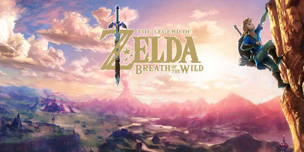

THE LEGEND OF ZELDABREATH OF THE WILD
|
 |
Es el título oficial del videojuego de acción-aventura de la serie The Legend of Zelda, desarrollado por Nintendo EPD (división de Nintendo creada por la unión de Nintendo EAD, Nintendo Software Planning & Development), en colaboración con Monolith Soft para Wii U y Nintendo Switch. Es la décimo octava entrega de la serie y la tercera en utilizar gráficos en alta definición (la primera fue The Legend of Zelda: The Wind Waker HD y la segunda es The Legend of Zelda: Twilight Princess HD). Se lanzó el 3 de marzo de 2017 para Wii U y Nintendo Switch. El juego introduce un mundo abierto en el que los usuarios serán capaces de encontrar distintos caminos o vías para llegar a un objetivo en el mapa. La idea original de la distribuidora era lanzar el juego en 2015;2 no obstante, en marzo de dicho año, el productor Eiji Aonuma declaró que los objetivos de la empresa habían cambiado y ya no buscaban lanzar el juego en ese año, retrasándolo para 2016.3 Tras unos meses sin noticia alguna del título, Nintendo anunció su retraso junto a esta hasta el 2017, así como que también el juego sería presentado formalmente (revelando su título oficial) en el E3 2016 (Los Ángeles). Finalmente, el juego fue presentado a través de su respectivo trailer en la E3, siendo este el eje central de la presentación de Nintendo. |